何ができる？
資料とAI音声から、ナレーション・字幕つきの動画やプレゼン資料をブラウザだけで作れます。
PRODUCT GUIDE
PDFなどの資料を読み込むだけで、ナレーション・字幕・キャラ演出つきの動画をブラウザだけで作れます。
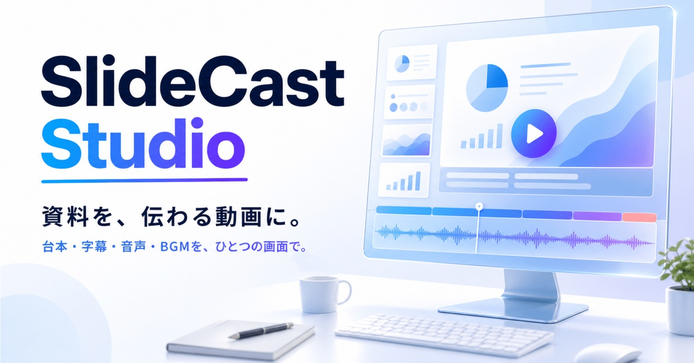
👋 OVERVIEW
🛠️ 最近のお知らせ
こんにちは、aokuma です。
最初に、この記事が馬鹿みたいに長くなってしまったことを謝っておきます。すみません。購入してから後悔して欲しくないので、色々書いていたらこんなことになってしまいました。
このツールの原点は、まじんさんが公開された素晴らしいツール「AI Slide Studio」です。そのプロンプトをベースに、私が魔改造を施して作ったのが「SlideCast Studio v1.0」でした。
最初は自分が使う用に、軽い気持ちで始めた魔改造でしたが、どんどんのめり込みどっぷり沼にハマってしまいました。結果として引っ込み思案であまり目立ちたくない私でも「このまま自分だけのものとして眠らせておくのはなんだかもったいない！」というクオリティまで仕上がったので、思い切ってまじんさんに DM しました。
大変ありがたいことに、まじんさんの note にて「SlideCast Studio v1.0」をゲスト公開していただき、多くの反響をいただきました。さらに、私の note で有料公開して良いという大変ありがたい許可までいただいています。このツールが世に出られたのは、まじんさんのおかげです。この場を借りて、あらためて御礼申し上げます。
実は、v1.0 を公開した当時は「自分的には 90 点くらいの出来だろう！」とかなり満足していたのですが……使うたびに痒いところに手が届かない使いにくさや、見逃していた不具合が目につきはじめ、「今思えば 30〜40 点程度だったな」と密かに反省しておりました。そこから不満点を潰し続けて v2.0 として公開し、改良を重ねて、現在は v3.4「NUANCE」に至ります。
資料とAI音声から、ナレーション・字幕つきの動画やプレゼン資料をブラウザだけで作れます。
月額課金はありません。一度購入すれば、その後のアップデートも同じ共有リンクから使えます。
APIキーなしで音声まで作れる Bundle Builder があるので、追加費用なしで始められます。
字幕・背景・キャラ・BGM・テロップ・トランジションまで、こだわる人が満足できる粒度で調整できます。
セリフの途中で表情やポーズを変えられる演技機能と、それを自動配置する「おまかせ演技」。
PCブラウザ専用です。初期設定（コピペのみ）が必要なので、動作環境の章もご確認ください。
ブラウザだけで完結する、インストール不要のスライド動画作成ツールです。
「SlideCast Studio」は、ブラウザだけで完結する、インストール不要のスライド動画作成ツールです。
PDF・画像・動画を読み込み、AI 音声（TTS）を使って、ナレーションと字幕付きの動画をそのまま生成できます。
動画（MP4/WebM）として保存することはもちろん、プレゼン資料（PowerPoint 等）や画像としての書き出しも可能。
YouTube の解説動画、TikTok/Shorts などの縦型動画、社内向けのプレゼン資料化などが、驚くほどのスピードで完成する「時短ツール」です！
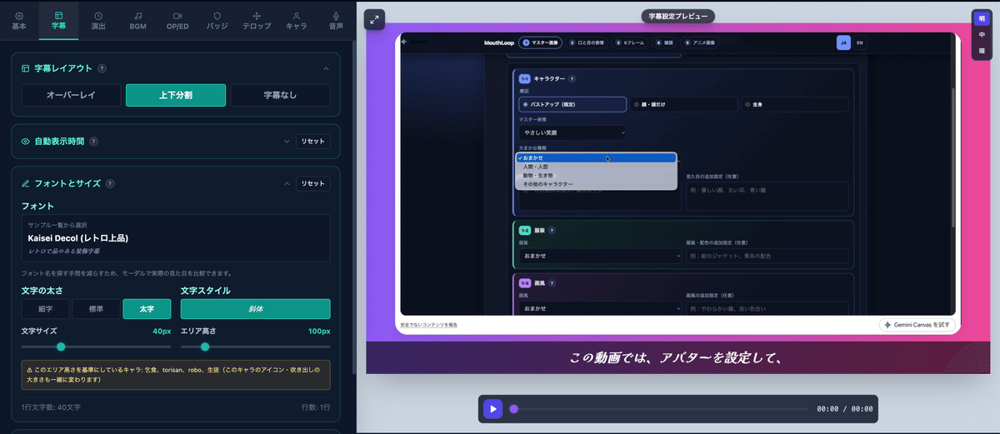
資料を渡すだけで台本を自動作成。
30種類の声から選べるナレーション。トーン（感情）指定にも対応。
口パク（リップシンク）・表情・ポーズ仕草・呼吸モーション。
Ken Burns のパン＆ズームで静止画に動きをつけられます。
MP4・WebM をスライドとして挿入。再生範囲のトリミングも可能。
資料なしでタイトル・章区切り・会話シーンを作成。
グラデーション・縁取り・影・角丸・バッジ・ロゴ・テロップ。
スライド単位で BGM を切り替え、クロスフェードも可能。
アプリ内で録音して差し替え（GAS版を除く）。
切り替え音と、音声なし台詞のレトロRPG風テキスト音。
音声・動画・間（ギャップ）を秒単位でドラッグ調整。
スライド画像＋字幕が一体化した A4縦形式で書き出し。
日本語・英語に対応。
MP4・WebM・PPTX・PDF・PNG・JPEG。画面比は 16:9 / 9:16 / 1:1。
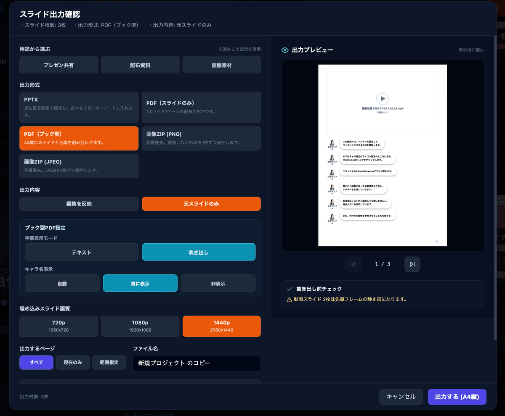
🛠️ 各機能の詳しい使い方はマニュアルへ
この記事は「何ができるか」を知っていただくためのページです。設定項目ひとつひとつの操作方法は、全16章の公式マニュアル（v3.4 NUANCE 対応版）にまとめています。
Bundle Builder で素材をまとめて作り、SlideCast Studio で仕上げる。これが最短ルートです。
🌟 まずは Bundle Builder から
SlideCast Studio Bundle Builder は、Google Gemini Canvas 上で動く専用の補助ツールです。標準モデルなら自分で APIキーを取得しなくても、台本づくりから AI 音声生成まで進められます。ダッシュボードの「Bundle Builder カード」から開けます。
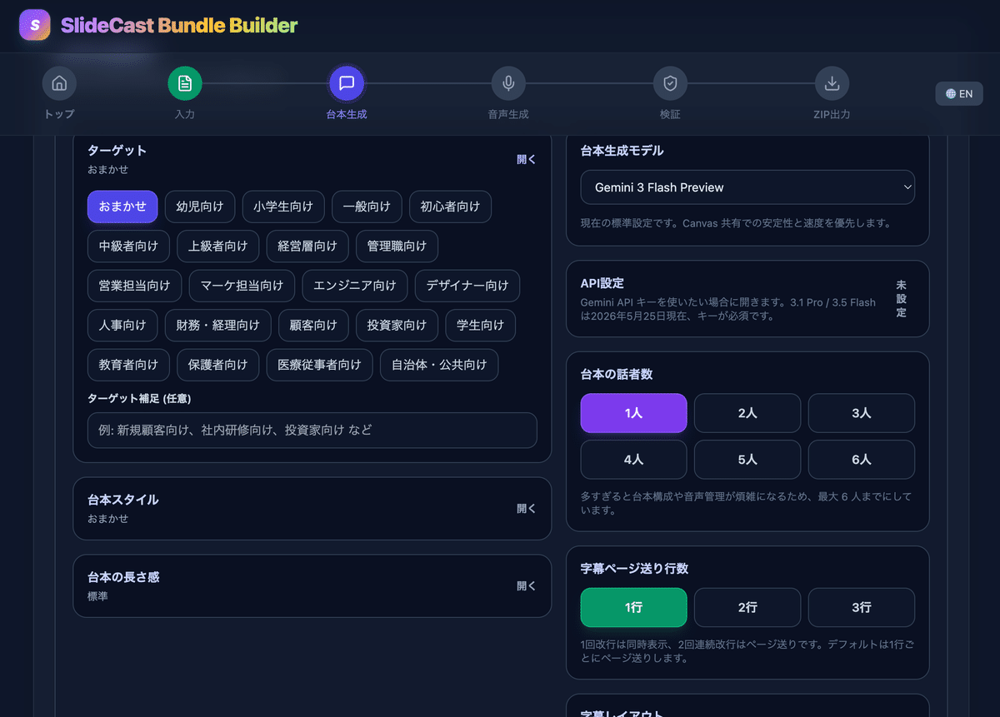
🟢 設定が多すぎると感じたら「かんたんモード」
スイッチひとつで必要最小限の設定だけを表示し、残りはおすすめの内容で自動設定します。慣れてきたら OFF にすれば、細部まで作り込める通常モードに戻ります。
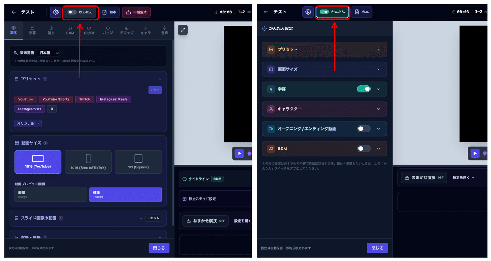
買い切り後もアップデートを続けています。これまでに増えた主な機能です。
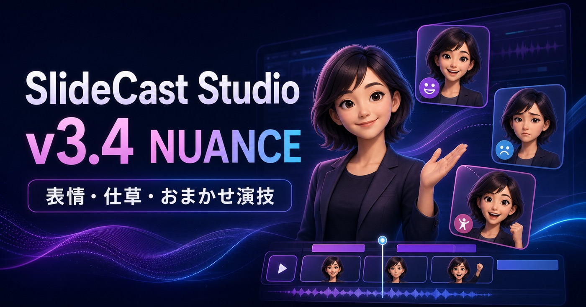
キャラが「口を動かす」だけでなく、セリフに合わせて表情やポーズを変えられるようにしたバージョンです。
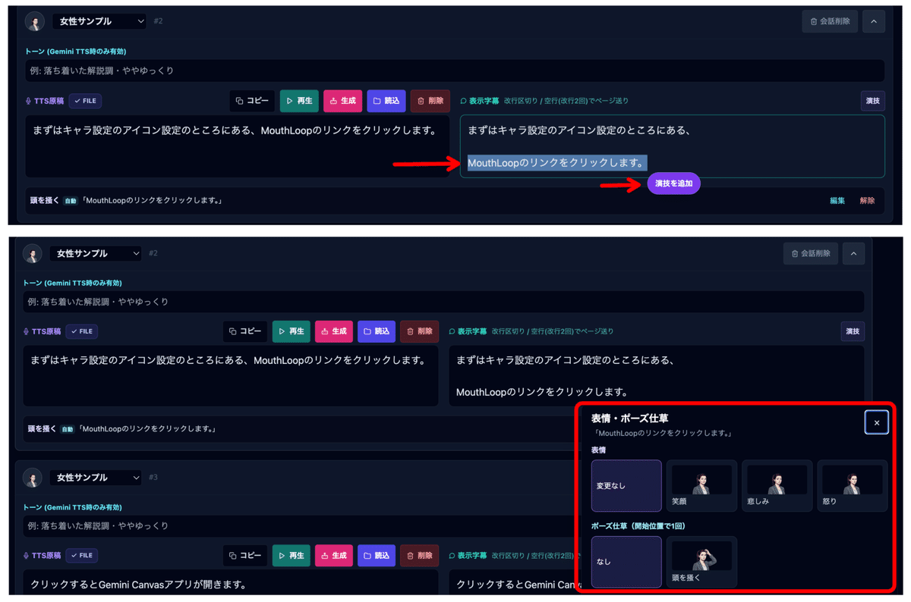
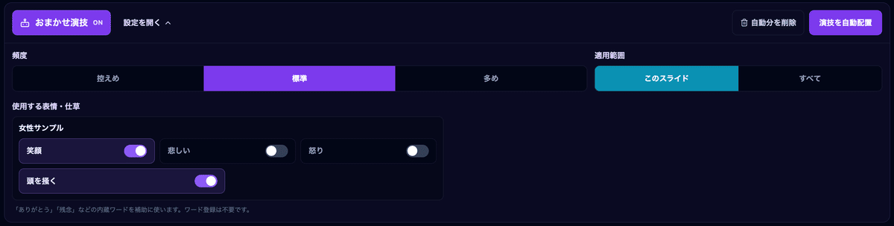
「ありがとうございます」だけ笑顔にする、説明の途中で指差しを入れる、といった演出ができます。
セリフの区切りに合わせて表情や仕草を自動配置。頻度と適用範囲を選べて、自動分だけまとめて削除もできます。
笑顔・悲しい・怒りなどの表情とポーズ仕草をまとめた ZIP をそのまま読み込めます。
静止画アイコンに、黙っている間の呼吸と、声の大きさに合わせた発話バウンスを追加。
資料画像なしで、タイトル画面・章区切り・エンドカード・会話シーンを作れます。
「キャラ素材・動き／レイアウト／デザイン」の3グループへ再編し、探しやすくしました。
💡 おまかせ演技に追加のAPI料金はかかりません
生成AIで文章を解析しているわけではなく、内蔵の判定と配置ルールを使っています。そのため追加のAPI通信や料金は発生しません。
ほぼ全部「キャラ設定」まわり。キャラのアイコンをどう登録して、どう動かすかを根本から作り直したバージョンです。
| 方式 | 登録するもの | 動き方 |
|---|---|---|
| 登録順 | 静止画を複数枚（2枚から） | 話している間、登録した順に切り替わります。いちばん手軽 |
| アニメ画像 | GIF / アニメWebP / APNG を1ファイル | 話している間、そのアニメーションが再生されます |
| 音声連動 | 静止画を6枚（枚数固定） | ナレーションの音量に合わせて口が動きます。いちばん自然 |
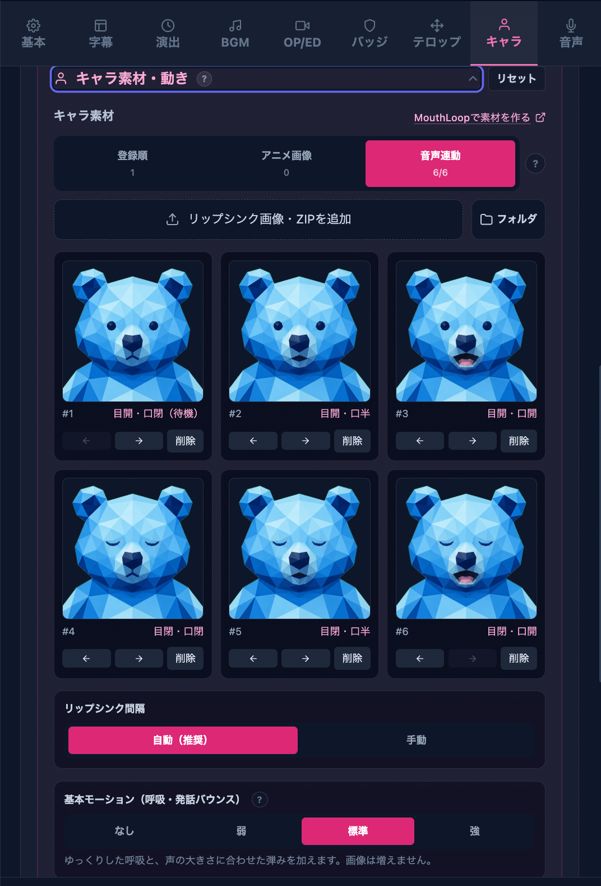
3方式の素材はそれぞれ別々に保存されるので、方式を切り替えても前の素材は消えません。試して戻す、が気軽にできます。また、アイコンの左右位置を動かすと吹き出しも一緒に移動するようになり、配置し直す手間がなくなりました。
🧩 素材づくり用アプリ「MouthLoop」
6枚のリップシンク画像を用意する手間は、Google Gemini Canvas 上で動く単体アプリ「MouthLoop」に逃がしました。1枚の画像から口パク用素材を自動生成できます。キャラ設定画面から直接開けます。
エディタの操作性と、タイミング・演出まわりを大きく広げた期間です。
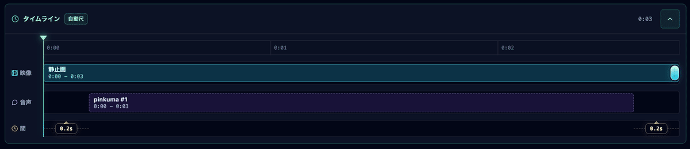
v1.0 の「痒いところに手が届かない」を一通り潰した、有料公開の起点となったバージョンです。
ご購入後のトラブルを防ぐため、必ずご確認のうえ、ご納得いただける方のみお進めください。
⚠️ スマートフォン・タブレットは非対応です
本ツールは PC ブラウザ（Google Chrome 推奨）で動作する Web アプリです。スマートフォンやタブレットでの動作は想定・保証しておりません。
本ツールには「最大何枚まで」という固定上限はありません。ただし動画のレンダリングはあなたのパソコンのブラウザメモリを使用します。実際の重さは枚数だけでなく、出力解像度・動画の総尺・素材の重さにも左右されます。
| メモリ | 720p | 1080p | 1440p |
|---|---|---|---|
| 8GB | 20〜40枚程度 | 10〜20枚程度 | 非推奨 |
| 16GB（推奨） | 50〜100枚程度 | 25〜50枚程度 | 10〜20枚程度 |
| 32GB | — | 50〜100枚程度 | 20〜40枚程度 |
💡 目安についての注意
上記はあくまで目安です。素材サイズや動画の長さによって前後します。
PC スペックに不安がある場合は、まず 1080p・標準画質での書き出しからお試しください。
動画書き出し中はブラウザメモリを使うので、他の作業や余計なタブは閉じておくと安定します。
16:9 / 9:16 / 1:1 で書き出せるため、TikTok、X、Instagram 向けの動画素材作成にも使えます。
ただし、MP4 で書き出した動画でも、そのまま各 SNS に最適な状態で投稿できるとは限りません。同じ MP4 でも中で使われている圧縮方式が異なることがあり、その代表例が H.264 と H.265 です。本アプリの動画書き出しはブラウザの仕様にも影響されるため、利用するブラウザによっては MP4 が H.265 形式で書き出される場合があります。その場合、投稿先によっては H.264 形式へ変換した方が安定しやすいケースがあります。
📮 SNS 投稿時の前提
SNS へ投稿する際は、必要に応じて動画の最終調整や形式変換を行う前提でご利用ください。
プロジェクトはすべてあなたのブラウザ内に保存されます。外部サーバーには送信しません。
すべてのプロジェクトデータは「あなたのブラウザ内（IndexedDB）」に保存されます。外部サーバーへのアップロードは行いません。
⚠️ データが消えるケース
ブラウザの「閲覧履歴・Cookie」を削除したとき
ブラウザをアンインストールしたとき
シークレット（プライベート）モードを終了したとき
一度消えたデータをアプリ側で復元することはできません。定期的なバックアップが唯一の対策です。
ダッシュボードからバックアップの書き出し・復元ができます（v3.x で ZIP 形式に対応し、保存項目も選べます）。新しい GAS プロジェクトや別のブラウザで開いた場合、以前のデータは自動では表示されないため、バックアップから復元してください。
ツール本体は買い切り。APIキーは「使いたい人だけ」の任意オプションです。
SlideCast Studio 本体の買い切り価格のみ。月額課金・サブスクリプションはありません。
本体から直接ボタン一つで AI 音声を自動生成したい場合に、ご自身で取得した API の従量課金が発生することがあります（任意）。
「API 料金がかかるのは嫌だ」「API の登録が難しそう」という方もご安心ください。以下のいずれの方法でも、APIキーを登録せずに音声つき動画を作れます。
APIキー設定なしで AI 音声まで生成できます。最推奨の入口です（「」を参照）。
無料枠のある Flash 系 TTS（Gemini 3.1 Flash TTS / 2.5 Flash TTS）で読み上げさせ、保存した音声ファイルを読み込ませる。
他の無料・有料サービスで作った音声ファイルを読み込ませる。
自分で録音した解説音声を読み込ませる。アプリ内のマイク録音も利用できます（GAS版を除く）。
本体からボタン一つで一括生成したい方は、Google AI Studio で取得した Gemini API キーを設定画面に登録します。無料枠でも試せますが、無料枠は1分あたり・1日あたりのリクエスト数制限が厳しく、数十枚を一気に生成すると止まることがあります。本格的に使う場合は有料枠が向いています。
Gemini API の TTS 料金は「リクエスト数」や「文字数」ではなく、「入出力のトークン数」で計算されます。中でも生成される音声側（出力：1秒間に約32トークン）の料金がメインです。
| モデル | 音声出力 / 1Mトークン | 無料枠 | 1分 | 1時間 | 10時間 |
|---|---|---|---|---|---|
| Gemini 3.1 Flash TTS（最新） | $20 | あり | 約6円 | 約370円 | 約3,690円 |
| Gemini 2.5 Flash TTS（高速） | $10 | あり | 約3円 | 約185円 | 約1,850円 |
| Gemini 2.5 Pro TTS（高品質） | $20 | なし | 約6円 | 約370円 | 約3,690円 |
💡 モデル選びのポイント
3.1 Flash TTS Preview と 2.5 Pro Preview TTS は、公式価格表では同額です（入力 $1 / 出力 $20 per 1Mトークン）。
ただし 3.1 Flash には無料枠があり、2.5 Pro にはありません。同じ料金なら、新しくて無料枠もある 3.1 Flash が選びやすい構図です。
とにかく安く済ませたい場合は、単価が半額の 2.5 Flash Preview TTS が最安になります。
⚠️ 料金についてのご注意
円換算は 1ドル＝160円、音声出力を 1秒あたり32トークンとして計算した概算です（2026年8月時点の公式価格表にもとづく）。
テキスト入力側のトークン料金は含めていません。
為替レートによって円換算額は変動します。
Google API の料金体系や仕様は突然改定・変更される場合があります。正確で最新の情報は必ず公式価格表をご確認の上、自己責任にてご利用ください。
なお、感情表現は控えめでも均一で安定した音声を使いたい場合は、Google Cloud Text-to-Speech API も任意で設定できます。こちらは毎月一定文字数までの無料枠があり、それを超えると従量課金となります。
いずれも Google が提供している外部サービスです。規約や料金体系は Google 側の最新の仕様をご確認ください。
安心してお使いいただくため、購入前にご確認ください。
本ツールを使用して作成した動画や画像、スライド資料の商用利用（YouTube配信、業務利用など）、およびご購入者様ご自身の個人的な利用範囲内でのアプリ（コード）の改変・カスタマイズは自由に行っていただけます。
本ツールの本体ファイル（HTMLやソースコード）、または改変したファイルの無断転載、二次配布、販売、譲渡、公開（誰でもアクセス可能な状態でのWebサーバーへのアップロード等）は固く禁止いたします。
本アプリ自体に、作者が意図してユーザーのデータ（スライド内容等）を収集・送信する設計はありません。しかしながら、以下の点についてはお客様ご自身の自己責任において十分ご注意の上ご利用ください。
🔑 APIキーの取り扱いと情報漏洩リスク
ご自身のAPIキーを登録してAI音声を生成する場合、ブラウザ内の悪意ある拡張機能（マルウェア等）やウイルス感染による情報漏洩など、外部サービス・APIの利用に起因して生じたいかなる損害・不利益についても、作者は一切の責任を負いかねます。APIキーの管理は厳重に行ってください。
⚖️ 外部サービスの利用規約遵守
外部の音声生成サービスを利用して作成した音声ファイルを本ツールに組み合わせて使用する場合は、必ず各サービスの利用規約（商用利用の可否、クレジット表記の有無など）を遵守してください。外部サービスの規約違反に関するトラブルについても対応いたしかねます。また、外部サービスではデータ学習されたりする可能性もあるのでよく確認してください。
プログラミングの知識は一切不要。数回のクリックとコピペで完成します。
「有料ツールを買っても、設定が難しくて使えなかったらどうしよう…」
そう不安に思われる方のために、導入手順を先に全公開いたします！
💡 プログラミングの知識は一切不要です！
アプリ本体を入手した後、以下の手順通りに数回クリックやコピペをするだけで、あなた専用の Web アプリ環境が完成します。一度設定してしまえば終わりですので、ぜひ以下の手順が「自分でもできそうか」を確認してからご購入をご検討ください。
ご購入後に案内する「GAS プロジェクト共有リンク」をクリックして開きます。
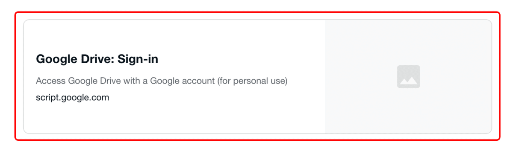
画面右上の「コピーを作成」ボタンをクリックします。すると、自分の Google ドライブ内にプロジェクトの複製が作成されます。
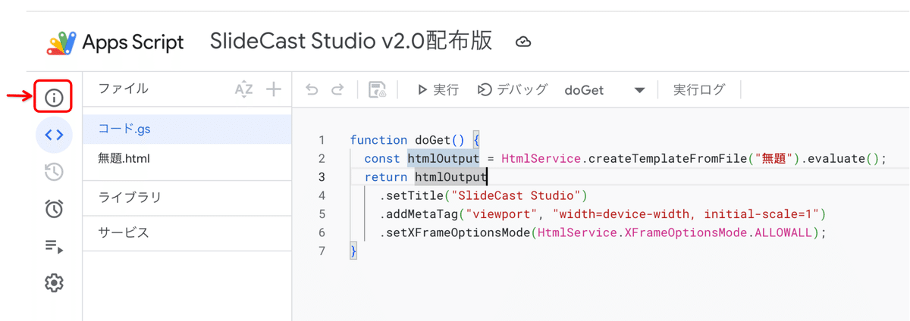
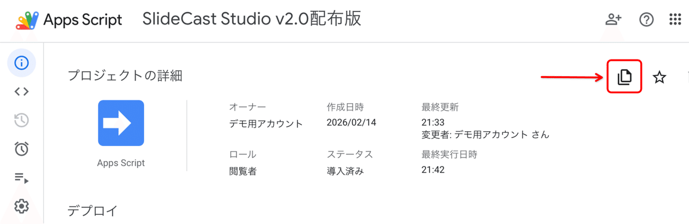
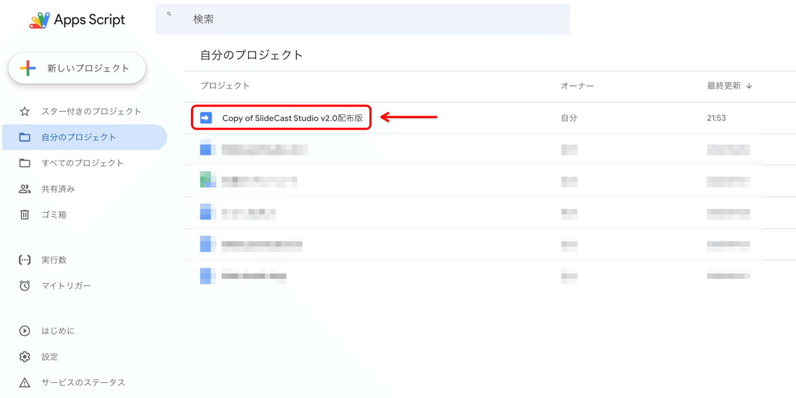
🛡️ セキュリティについて
配布しているコードに悪意のある処理はありませんが、内容に不安がある場合は、ChatGPT や Claude、Gemini などの各種 AI にコードを読み込ませ、「このコードに悪意のある処理が含まれていないか診断してください」と依頼することをお勧めします。内容を確認した上で安心してご利用ください。
① 🔵 デプロイの開始
画面右上の青い「デプロイ」ボタン ＞「新しいデプロイ」を選択します。
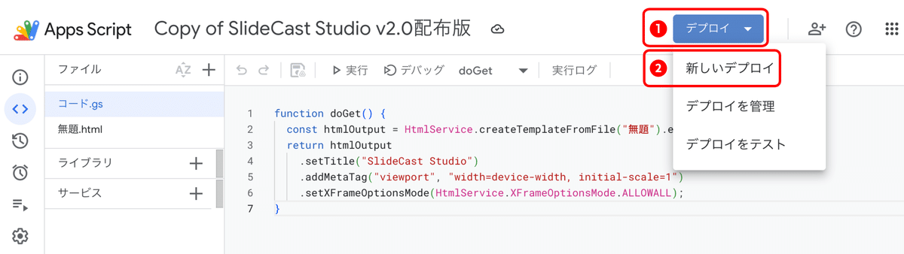
② ⚙️ 種類の選択
左側の歯車アイコンをクリックし、「ウェブアプリ」を選択します。
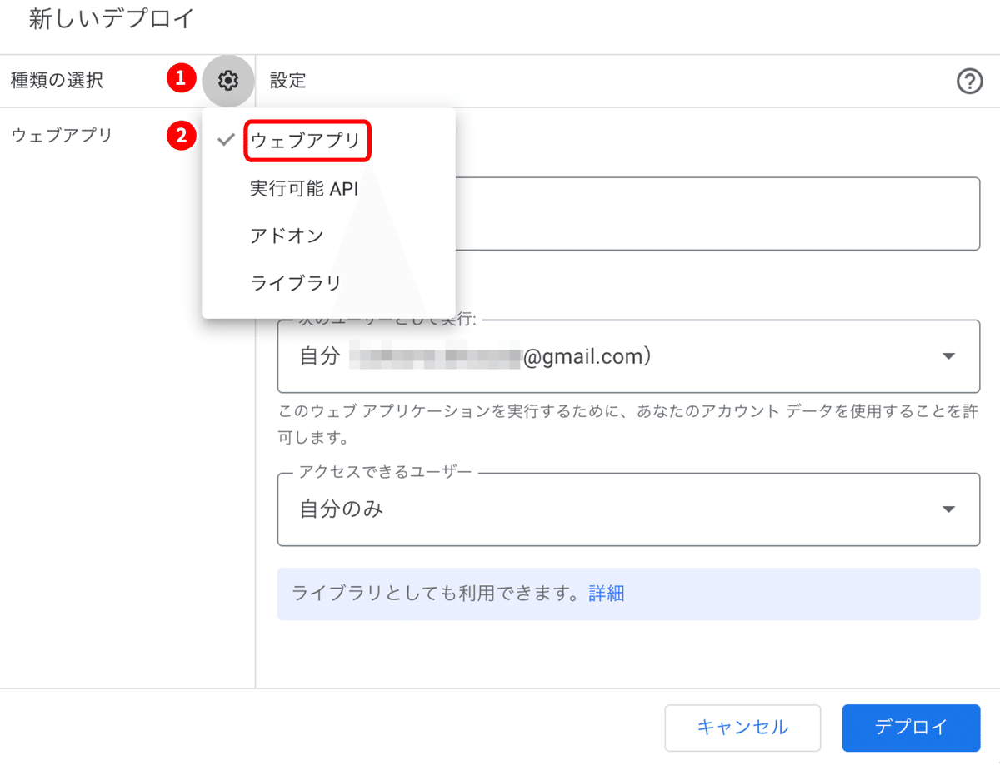
③ 🛠️ 設定の確認
設定後、右下の「デプロイ」をクリックします。
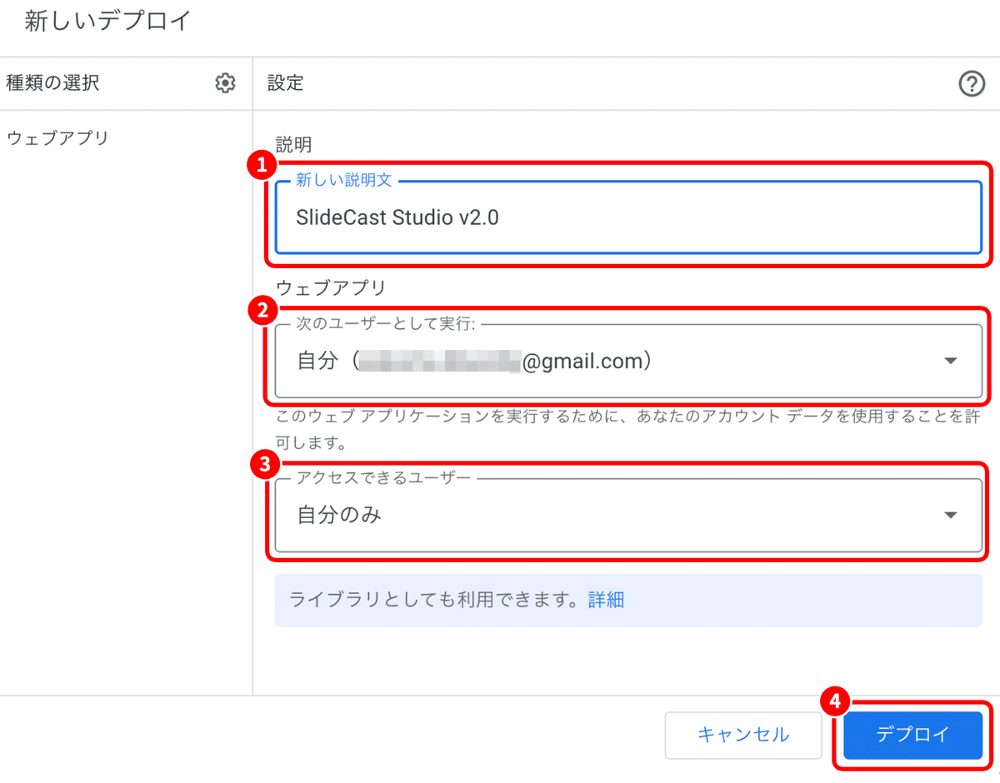
「アクセスを承認」画面が出たら、自分のアカウントを選択 ＞ 左下の「詳細」をクリック ＞ 最下部の「〇〇（安全ではないページ）に移動」をクリックして許可してください。初めてだとびっくりして怖くなるかもしれませんが、定例儀式のようなものです。※ただし本当に悪意のあるものだったら危険なので注意してください。
発行された「ウェブアプリの URL」にアクセスすればアプリ画面が開くので利用開始できます。これで自分だけがアクセスできる専用アプリになりました。ブックマークしておけば次回からすぐに開始できます。
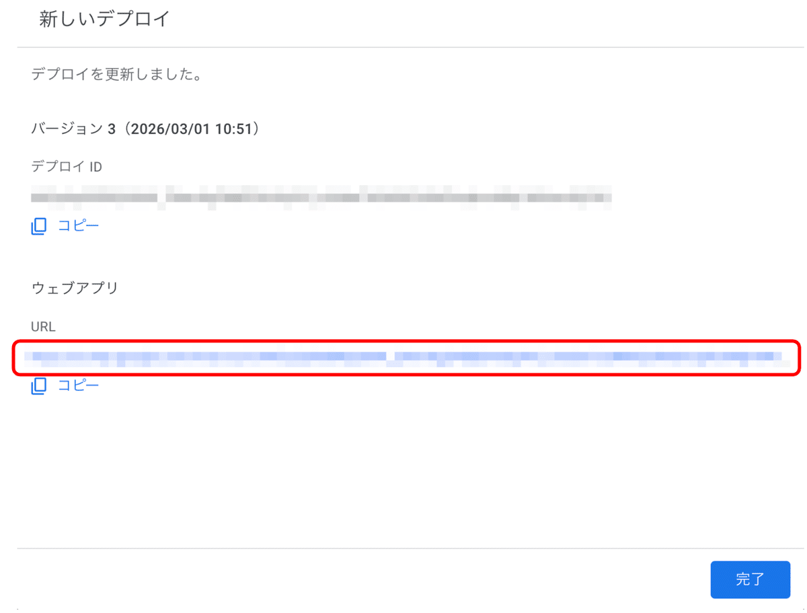
✨ たったこれだけです！
設定が完了したら、あとはブックマークした URL にアクセスするだけで、いつでも「SlideCast Studio」が起動します。
アップデートは追加費用なしです。購入済みの方は、これまでと同じ有料 note の共有リンクから最新版をコピーしてご利用いただけます。既存のプロジェクトやライブラリ、設定を引き継ぎたい場合は、念のため先に「データ保存」からバックアップを作成してください。
価格設定はAIに丸投げしています。今後もAIの判断で変動します。
本ツールの開発には、私の限界に近い努力が詰まっています。ここ数ヶ月間、以下のスケジュールで開発に没頭してきました。
誰に頼まれたわけでもありませんが、それほどまでにこのツールを形にしたいという強い思いがありました。しかし、現状の生活環境（本業と二人の育児）の中で、利益なしに開発を継続することは現実的に困難です。今後、より良いツールへと進化させ続けるための決断として、有料での公開をご理解いただけると幸いです。
とはいえ、「せっかく作ったのだから、なるべく多くの方に使ってほしい！」という思いもあります。しかし私はマーケティングに疎いため、今回の価格設定はすべて AI に丸投げすることにしました。AI には「ツールの価値を適正に評価しつつ、より多くの人に使ってもらえて、かつ収益も得られるバランスの良い価格」を指示しています。
そのため、今後の売れ行きやアップデート状況に応じて、AI の判断で価格が随時更新される仕様となっています。まったく売れなければ価格を下げるかもしれませんし、売れ行きが良かったり機能が追加されれば価格が上がるかもしれません（私自身にもどうなるかわかりません）。
AI（Gemini 3.1 Pro）の意見：
しかし、私がユーザーの立場になったら「いくら便利そうでも、どこの誰だか知らない人の個人開発のツールにいきなり約 4,000 円を出すのは、少し勇気がいるな…」と感じました。どうしても、もっと多くの方にこの体験を直接届けて、使って欲しい。
そこで、AI の提案を押し切って、note の「SNS プロモーション機能」を活用した特別割引を実施することにしました！この記事を X で拡散（リポスト）して応援してくださった方に限り、AI 提案価格の半額以下である 1,980円 でご購入いただけます。
（もちろん、通常価格 3,980 円のまま「開発費への応援」としてご購入いただける神様のような方も大歓迎です…！）
個人開発だからできる限界価格。AIの提案3,980円を押し切って、拡散協力で1,980円にします。ただし初期の細かいバグ対応などはご愛嬌でお許しください🙇♂️
今回の私とAIの妥協点であり、結論
なお、この特別価格設定も今後の機能アップデートや稼働状況に応じて、AI の判断により順次適正価格へと更新されていく予定です。もし少しでも気になっている方は、お得な今のタイミングでお手に取っていただき、SlideCast Studio を体験していただければ幸いです！
💡 最新価格は note でご確認ください
価格は AI の判断で随時更新されます。この HTML 版の記載は 2026/8/9 時点の内容です。購入時点の価格は必ず note の元記事でご確認ください。
買い切り後も、追加費用なしでアップデートを続けています。
公式マニュアルを v3.4 NUANCE 対応版へ全面改訂しました。
表情・ポーズ仕草、おまかせ演技、キャラパックZIP、呼吸・発話モーション、空のスライドを追加。
字幕設定とキャラ設定のところを整理しました。
キャラアバターをフワフワ動くようにしました。
トーストが消えないバグと、字幕欄でカーソルがズレるバグを修正しました。
アニメーション素材の読み込みや MouthLoop のリンクを修正しました。
キャラ素材3方式、ZIP/フォルダ読み込み、6枚リップシンク、吹き出し追従を追加。
GAS のアップデート手順についての記事を追加しました。
v3.2 に更新しました。詳細はアップデート記事へ。
Bundle Builder が録音にも対応。SlideCast Studio では音声の速度やピッチを後から変更できるようになりました。
もう v3.0 で最後かと思っていましたが v3.1 にアップデートしました。共有リンクからコピー可能です。
字幕を表示する際のアニメーション設定を追加しました。
Gemini Canvas アプリの SlideCast Bundle Builder を最新版に更新しました。
動画スライドのプレビュー周りについて再度気になるところがあり修正しました。
動画スライドのタイミング調整やトリミング周りの不具合を調整しました。
少しバグや不具合があったので修正しました。
SlideCast Studio v3.0 にアップデートしました。かんたんモード・台本タブ・スライド内タイムラインなどを追加。